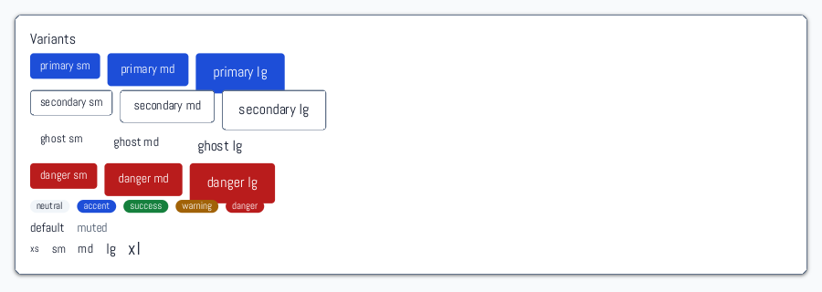

Browse documentation
Buttons
Trigger actions with a visible label, an intentional variant, and a clear enabled or loading state.
Import
Load the optional component layer before using the examples below.
Ruby
require "zaniah/ui"Variants
Use primary for the main action, secondary for supporting actions, ghost for low-emphasis actions, and danger for destructive actions.
Rendered example

Ruby
Zaniah::UI::Button.new("Save", variant: :primary)
.icon(:check)
.on_click { puts "Saved" }
Zaniah::UI::Button.new("Cancel", variant: :secondary)
Zaniah::UI::Button.new("Delete", variant: :danger)
Sizes and states
Select size: :sm, :md, or :lg. Use disabled for unavailable actions and loading while work is in progress.
Ruby
Zaniah::UI::Button.new("Save", size: :sm)
Zaniah::UI::Button.new("Save", size: :md)
Zaniah::UI::Button.new("Save", size: :lg)
Icon and toggle buttons
An icon-only action needs a text label. A toggle button represents a pressed or unpressed action, not a form checkbox.
Ruby
Zaniah::UI::IconButton.new(:menu, label: "Open menu")
Zaniah::UI::ToggleButton.new("Pin", value: true)
API summary
Constructor options and behaviors are drawn from the component reference.
| Component | Constructor and methods | Variants or behavior |
|---|---|---|
Button | (label, size:, variant:); disabled, loading, icon, on_click | sm/md/lg × primary/secondary/ghost/danger |
IconButton | (icon, label:, ...) | Button variants |
ToggleButton | (label, value:); on_change | Button variants |
Accessibility
Buttons expose the button role. Icon buttons require a label, and toggle buttons expose their pressed state.
| Component | Semantic role |
|---|---|
Button | button |
IconButton | button |
ToggleButton | button/pressed |